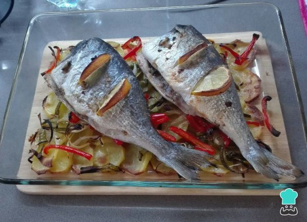
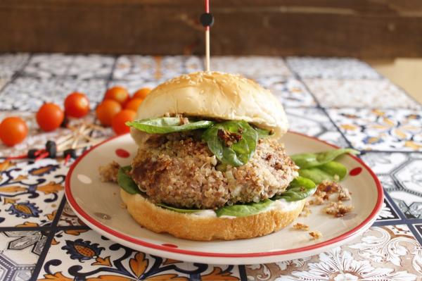
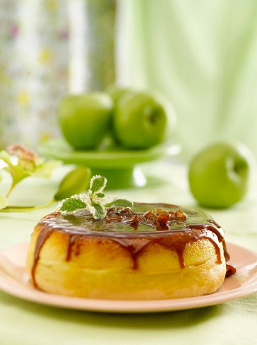

Dorada al horno con limón y patatas
01 de Octubre de 2017
Sabemos que el pescado no puede faltar en nuestra dieta, así que si quieres incluir en tu menú un plato lleno de sabor y saludable, te recomendamos probar hoy mismo esta receta de dorada al horno.El pescado al horno es muy fácil de hacer, el secreto está en sabor sazonarlo correctamente y cocinar en conjunto algunas verduras para que todo se bañe con el sabor del pescado. Pues bien, en esta ocasión usaremos limón y un toque de vino para darle al plato ese gusto especial.La receta de dorada al horno con limón y patatas es realmente buena y sobre todo, muy fácil de hacer así que no pierdas detalle de las instrucciones paso a paso.Ingredientes para 2 raciones de Dorada al horno con limón y patatas.

Roberto Colombo
Muy buena la receta y sencilla
Ribas Elisa
Muy rica la receta, tambien se le puede agregar crema de leche a la coccion
Haburguesas Quinoa
02 de Octubre de 2017
La quinoa se ha convertido en un alimento muy apreciado en la actualidad, y ahora es mucho más fácil encontrarla en cualquier supermercado. Tal vez te no la hayas probado aún o te gustaría introducirla en tu dieta habitual, pero no sabes muy bien como.Pues bien, yo te voy a hacer una propuesta que te va a encantar, y es elaborar tu propia hamburguesa de ternera incorporando la quinoa. Pídele a tu carnicero que te pique un buen trozo de ternera y vamos manos a la obra con la receta.

Peña Flavia
Quede bien con mis invitados y los suegros!!!!
Zingarella de Vainilla
15 de Octubre de 2017
Colocamos el azúcar en la Cacerola.Tapamos y acaramelamos a fuego medio. Retiramos del fuego y distribuimos el caramelo caliente sobre las paredes de la pieza (quedará adherida una fina película a las paredes y el resto se depositará en una capa uniforme en el fondo).Dejamos enfriar la Cacerola.
Flan
Mezclamos los huevos con el azúcar.Agregamos la leche y la esencia de vainilla.Volcamos en la pieza, sobre el caramelo ya solidificado. Cubrimos con las rodajas de manzana.
Bizcochuelo
Batimos las claras hasta lograr punto de nieve. Agregamos el azúcar y continuar batiendo hasta obtener un merengue. Añadimos las yemas y la esencia de vainilla, continuamos batiendo unos minutos hasta lograr punto letra. Incorporamos poco a poco la harina, mezclando suavemente con espátula en forma envolvente. Distribuimos sobre las manzanas. Tapamos y cocinamos a fuego corona hasta finalizar la cocción. Desmoldamos fría
Roldan Susana
Buenisimo postre